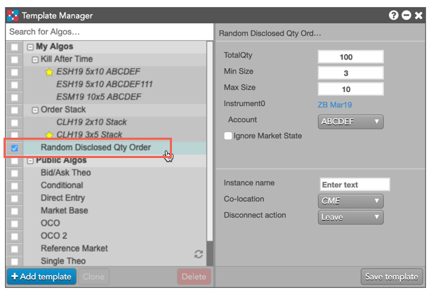
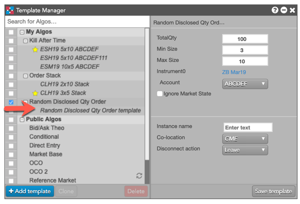
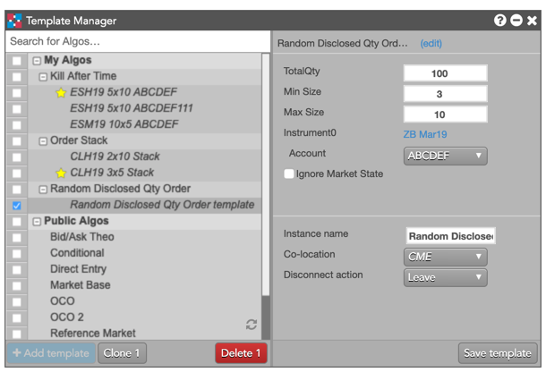
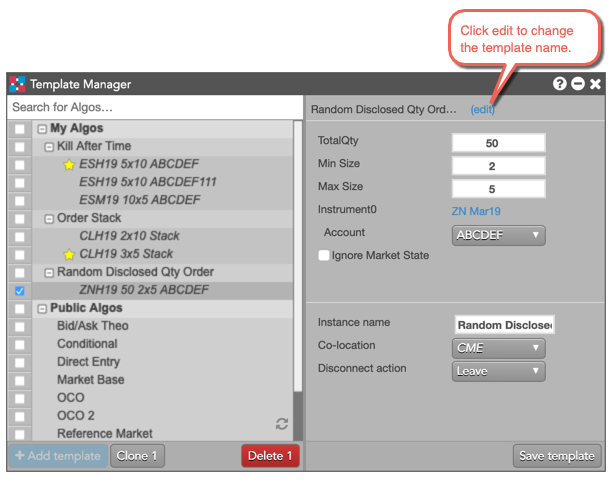
 to save the template.
By default, the Instance Name matches the template name. If desired, you can also change it to a different value.
to save the template.
By default, the Instance Name matches the template name. If desired, you can also change it to a different value.
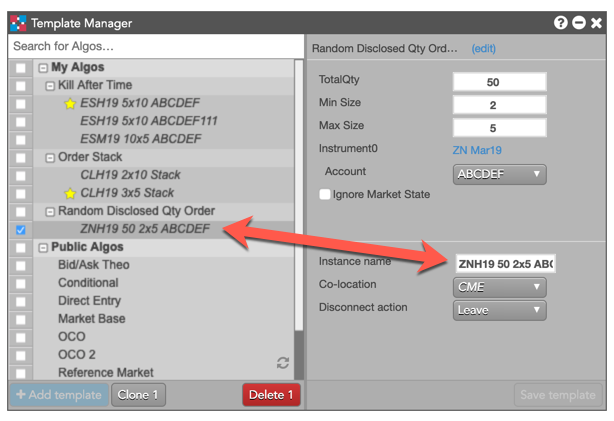
Using the Template Manager, you can easily create and manage templates that provide customized, preset values for an algo. You can then launch these algos with their pre-defined values, or you can associate a template with a custom action button in MD Trader.
The Template Manager lets you:
You can add templates for one or more algos. A new template begins with the default parameter values configured for each algo.
To add a template for an algo:
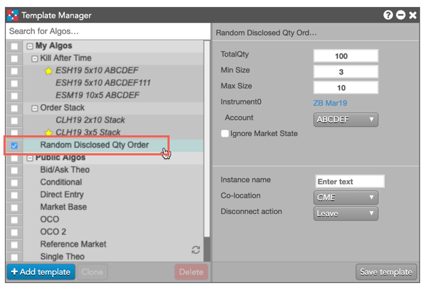
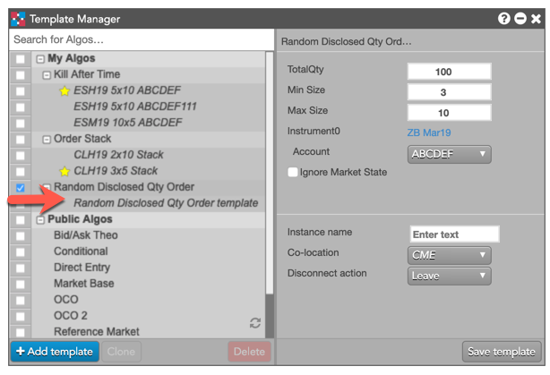
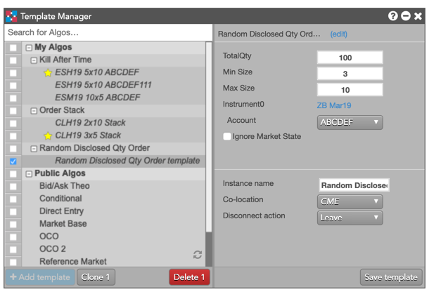
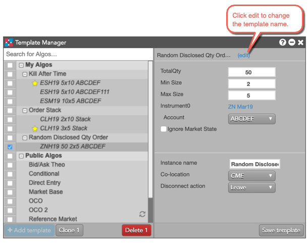
to save the template.
By default, the Instance Name matches the template name. If desired, you can also change it to a different value.
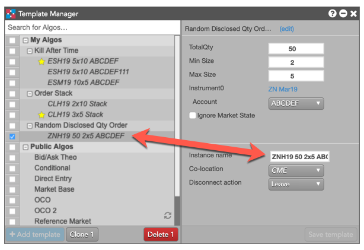
Note: You can also select multiple algos and create new templates for each them, all at once.
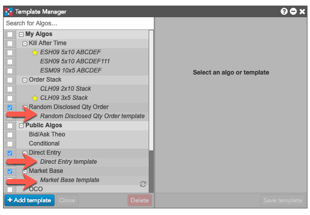
In addition to creating new templates for algos, you can also clone existing templates to create multiple sets of preset values for an algo.
To clone algo templates:
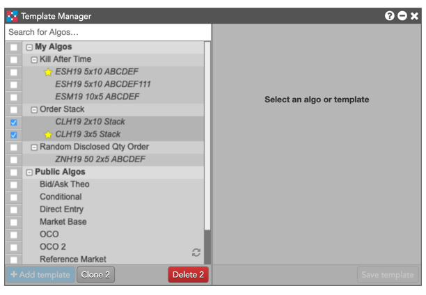
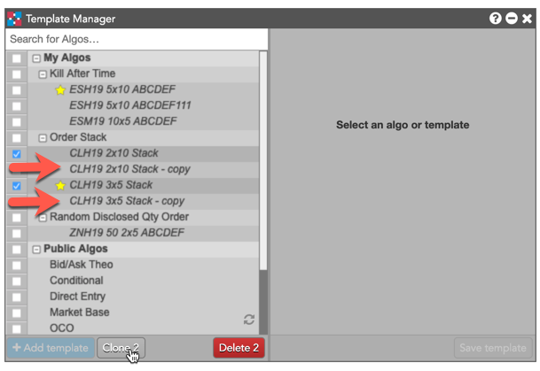
A default algo template indicates which set of preset values to display when selecting an algo to launch, such as in Algo Dashboard. When you create multiple templates for an algo, you must select a default template to use whenever you select an algo. The default template is identified with a star ( ), as shown.
), as shown.
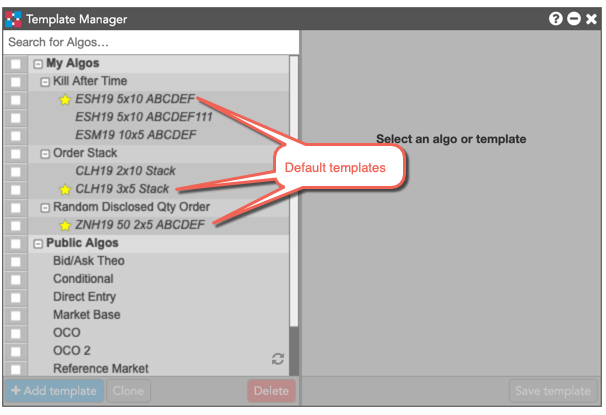
To set a default template for an algo:
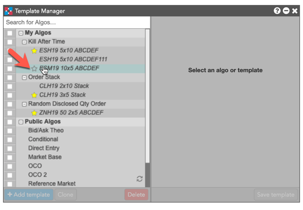
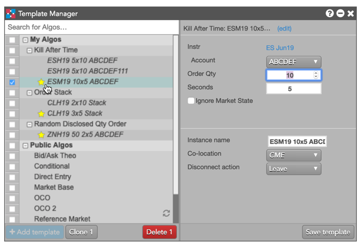
To delete algo templates: